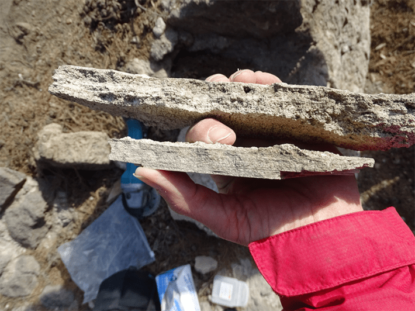

The ancient Romans took bathing seriously—it was a crucial facet of their daily lives, and people from a range of social rungs enjoyed dips in public baths. Romans seem to have taken sanitation inspiration from the Greeks, who washed up in athletic facilities and public baths.
To learn about the transition from Greek to Roman bathing practices, researchers looked to the remains of the ancient city of Pompeii in what’s now Italy. The Greeks called Pompeii home for centuries until the second century B.C., when the rival Samnite people took over—they were familiar with Greek culture. Then, around 80 B.C., Pompeii became a Roman colony.
This rule came to an abrupt end in 79 A.D., when the eruption of Mount Vesuvius covered Pompeii and many of its thousands of residents in ash. The tragedy has preserved remnants of the city for millennia, providing researchers a uniquely detailed look at its long history, which includes an intricate record of Roman Pompeii’s water system, along with fragments of earlier systems.

CARBONATE CLUES: Researchers used carbonate samples, pictured here, to learn what Pompeii’s ancient baths were like. Photo by Cees Passchier.
Researchers from throughout Europe pieced together this aquatic history based on deposits of calcium carbonate in ancient baths, wells, and an aqueduct. The deposits have alternating layers that vary in chemical composition, hinting at changes in water quality and quantity over centuries, along with where it was sourced from.
Analysis of these deposits revealed that the Romans revamped the water supply system, according to a recent PNAS paper. The scientists found that pre-Roman wells supplying the baths were connected to groundwater chock-full of minerals. This “was not ideal for drinking purposes,” explained a statement. But an aqueduct added by the Romans seemed to be fed by springs around 22 miles northeast of the city, a much more suitable source.
Read more: “What Volcanoes Tell Us”
The team also noticed significant shifts in cleanliness over time. The city’s oldest public bathing facilities, known as the Republican Baths, were built around 130 B.C., predating the Romans. They seem to have been pretty nasty: Carbon isotopes in sediment from drainage water pointed to bathwater contaminated with human waste, including sweat and urine.
This indicates the water wasn’t replenished very often—around once a day. But previous archaeological evidence has suggested it was a slow, arduous process involving a wheel and chains of buckets. Later, with the aqueduct in place, the Romans could refresh the water much more often.
The carbonate deposits also revealed elevated levels of lead in the Republican Baths, which may have come from the piping system. And in the later Roman infrastructure, they found evidence of lead contamination from the city’s pipes. But lead pollution in both contexts seem to have waned over time thanks to mineral deposits that built up inside the pipes. This issue may have cropped up whenever pipes were replaced.
The wealthy residents of Pompeii likely had lower lead levels in their drinking water, New Scientist reported, because their homes had roofs that sent rainwater directly into a cistern, while poor people may have been more dependent on lead-contaminated water from street fountains—class disparities in water access echoing those found around the world today. 
Enjoying Nautilus? Subscribe to our free newsletter.
Lead image: MentNFG / Wikimedia Commons